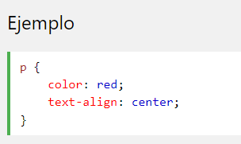

Sintaxis y Selectores CSS
La sintaxis es un conjunto de reglas CSS consta de un selector y un bloque de declaracion

Los puntos selector para el elemento HTML que desea estilo. El bloque de declaración contiene una o más declaraciones separadas por punto y coma. Cada declaración incluye un nombre de propiedad CSS y un valor, separados por dos puntos. Una declaración CSS siempre termina con un punto y coma, y los bloques de declaraciones están rodeados por llaves.

- Los selectores CSS
- El selector de elemento
- El selector de ID
Selectores CSS se utilizan para "find" (o seleccionar) elementos HTML en funcion de su nombre de elemento, de la identificacion, clase, atributo y mucho mas.
Selecciona elementos basados en el nombre del elemento. puede selecionar todos los
elemntos de una pagina como esta (en este caso, todos los
elementos seran alineados-centro, con un color rojo texto)